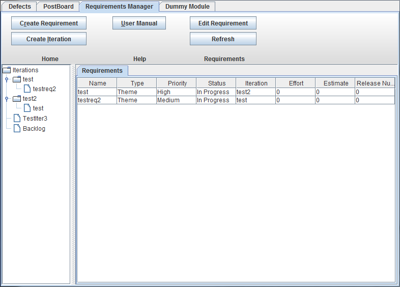

If this is your first time using the WPI Suite you will need to own a user account. After an admin has created your account, launch the application, and fill in the required fields - Enter your username and password. - Keep these in a securce place, or you will require an admin to manually fix any issues - Enter the name of your project, and the url of the server it is hosted at - Click the "Connect" button.